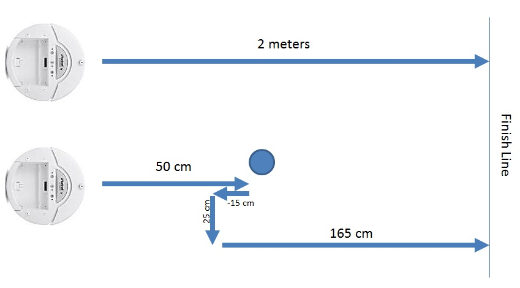

CPRE 288 Laboratory
Lab 2: iRobot Open Interface and Movement
Lecture - Lab Connection
In lecture, you have continued an overview of C programming and have started learning about structures. In this lab, we are using the Cerebot II microcontroller board to control the iRobot Create. The ATmega128 processor has been wired so communication between the iRobot Create and the processor is streamlined. The Open Interface files provided below hides the communication over serial so that you can be a more productive programmer working with functions at a higher level of abstraction.
Prelab
- Read through the lab description, including the linked documents.
- Skim the reference documents below; in particular, you should read the iRobot Create - Open Interface (pages 17-21) specification and gain a good basic understanding of the commands you are able to send the iRobot and the sensor packets it returns to the processor.
- Print the Lab Evaluation Form.
Reference Documents
All reference documents are also available on the Resources page of the course website.
Reference Files
Download the following files to a single folder your U: drive. (Right-click and select 'Save Target As')
- open_interface.c: The API functions for the most basic Open Interface functions
- open_interface.h: The header file for open_interface.c
- lcd.c: A program file with a number of LCD functions
- lcd.h: The header file for lcd.c
- util.c: A program file that supports lcd.c
- util.h: The header file for util.c
Part 1. Moving Forward
Requirements - Write a program that makes the robot move forward 1 meter and then stops.
In this lab, our attention will be focused on two components of the robot used in lab: the iRobot Create and the serial on the microcontroller. We will issue commands over the ATmega 128's USART1 connection to the iRobot and use it to control movement. The iRobot Create has an "Open Interface", or a standard way of communicating, that allows us to send a range of instructions. The instructions we are primarily interested in are those related to movement and sensor values. A simple API has been written for you that handles setting the wheel speed and retreiving sensor data.
You will need to use the oi_set_wheels(...) function to tell the iRobot Create to move. The oi_set_wheels(...) function calls the "Direct Drive" (opcode:145) operation listed on page 9 the Open Interface document. As you can see in the OI specification the motors can be set to run independently from each other. The velocity ranges from -500 mm/s (backwards) and 500 mm/s (forwards).
Beyond making the Create move, you will need to know how far it has moved. The same Open Interface API mentioned previously addresses fetching sensor data from the iRobot Create. The oi_update(oi_t *self) function should be passed a pointer to a oi_t structure. The function will then update every member of the structure with the current sensor value. You should attempt to gain an understanding of the oi_t structure described in open_interface.h and its relation with the sensor packets listed on pages 17-20 of the Open Interface document.
Notes
- Ensure the iRobot Create is turned on by making sure the Power LED is lit.
- Make sure you initialize the serial connection with iRobot Create before sending it commands. You can do this by calling:
oi_t *sensor_data = oi_alloc();
oi_init(sensor_data); // should turn the iRobot Create's power LED yellow - Turn the iRobot Create off BEFORE loading your program so the robot does not run off the table. After programming, disconnect the JTAG cable, turn the iRobot Create on and reset your program with the reset button.
In addition, you will want the iRobot to tell you how far it has travelled. Every time you call oi_update(...), two members of the
struct will be updated: angle and distance. These variables are explained in detail on pages 18-19 of the Open Interface document.
Read the following example code to gain further understanding:
#include "open_interface.h"
void main() {
oi_t *sensor_data = oi_alloc();
oi_init(sensor_data);
int sum = 0;
oi_set_wheels(500, 500); // move forward; full speed
while (sum < 1000) {
oi_update(sensor_data);
sum += sensor_data->distance;
}
oi_set_wheels(0, 0); // stop
oi_free(sensor_data);
}
If you have completed this section of the lab within the first 30 minutes of lab, move on to Part 2. The parts of the lab are cummulative, and demoing the last part to the TA is sufficient for receiving all points. If you think you will fail to complete the entire lab within the lab period, you may demo this part to your TA for partial credit and demo the remaining parts at the beginning of your next lab session.
Part 2. Moving in a Square
Requirements - Write an API (create two new files: movement.c, movement.h) that contain new functions that help you (1) move the robot forward a specific distance and (2) allow you to turn the robot left or right by a certain number of degrees. Use these new files and functionality to write a program the makes the robot move in a 50 centimeter square, then stop the robot (i.e. do the following four times: move forward 50 cm, turn 90 degrees).
Notes
- Ensure the iRobot Create is turned on by making sure the Power LED is lit.
- Use good method names, such as void move_forward(oi_t *sensor, int centimeters); and void turn_clockwise(oi_t *sensor, int degrees);
- Follow good coding practices; i.e. put your function signatures in the header file (.h), and put the implementation of the functions in the .c file.
- You'll need to use the angle member of the oi_t struct. Remember, positive angles are counter clockwise; negative angles are clockwise.
- To save memory, call oi_alloc() and oi_init(...) only once at the beginning of the program. You will need to pass the pointer (oi_t *) to your functions.
- Turn the iRobot Create off BEFORE loading your program so the robot does not run off the table. After programming, disconnect the JTAG cable, turn the iRobot Create on and reset your program with the reset button.
If you have completed this section of the lab within the first hour of lab, move on to Part 3. The parts of the lab are cummulative, and demoing the last part to the TA is sufficient for receiving all points. If you think you will fail to complete the entire lab within the lab period, you may demo this part to your TA for partial credit and demo the remaining parts at the beginning of your next lab session.
Part 3. Collision Detection
The Create has many sensors. There are two bump sensors in the front of the device. In Part 3, you are to integrate the bump sensors with forward movement.
Requirements - Write a program that satisfies the following requirements; you should reuse, alter, and expand the API (movement.c, movement.h) from part 2. The robot shall move forward 2 meters in total (imagine a finish line 2 meters away). If no obstacle is present in the path of travel, the robot should simply travel 2 meters forward. However if the robot comes in contact with an object, the robot should attempt to go around the object by issuing the following commands: backup 15 cm, turn 90 degrees, move laterally 25cm, then turn 90 degress back forward. If the collision occurs with the right bumper, the robot should initially spin 90 degrees to the left. If the collision occurs with the left bumper, the platform should spin 90 degrees to the right. If both sensors report a collision, then pick a direction and perform a 90 degree spin. After attempting to move laterally to step around the object, resume traveling forward the original 2 meters and stop.
You may want to update your moveForward(...) function to stop if it runs into an object, and return the actual distance traveled.
To get the status of the left and right bump sensors, use the bumper_right and bumper_left members of the oi_t structure. These members are boolean values. A nonzero value means that the bump sensor is colliding with an object. For example:
oi_update(sensor_data); // get current state of all sensors
if (sensor_data->bumper_left) {
// Respond to left bumper being pressed
}
Demo your program to your TA.
Cautions
Never leave a powered-down JTAGICE mkII connected to a powered robot - current may leak from the unit and result in damage to the emulator. Try to leave the blue JTAGICE mkII box powered on at all times.
Turn the power to the Cerebot board and iRobot off before charging. The Cerebot board consumes power and the battery will not charge if the robot is in full_mode (which it enters after calling oi_init, turing the power LED yellow). The robot is charging when the robot's power LED is pulsing red and both green LEDS on the dock are lit.
Reference Files
| Files | Description |
|---|---|
| iRobot Create Open Interface | Information on the oi_update method and members of the oi_t structure are on pages 17-21 |
| Lab Evaluation Form | Evaluation form for Lab |
| Online Feedback Form | Tell us what you think of the lab (feedback forms) |